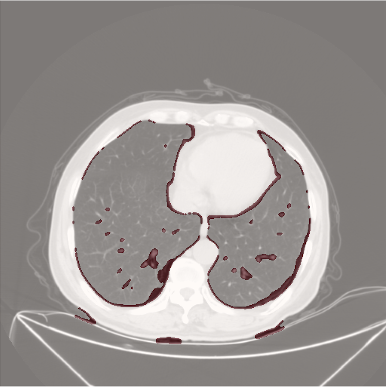

An end-to-end image-processing pipeline that screens CT lung scans for potentially cancerous nodules. Every stage — filtering, segmentation, edge detection, feature extraction — is implemented directly on NumPy arrays, proving out the classical computer-vision fundamentals that deep-learning systems are built on. The result: 87% sensitivity on abnormal-structure detection.
Lung cancer is most survivable when caught early — and early nodules are small, low-contrast, and easy to miss in the hundreds of slices a single CT study produces. The goal here was an automated first-pass screen: flag suspicious structures with high sensitivity so that human attention goes where it matters most.
A deliberate constraint: no pretrained models, no black boxes. Building the pipeline from classical operations makes every decision inspectable — a property that matters in medical contexts, and a much deeper test of image-processing fundamentals.
Each CT slice moves through five stages, every one implemented from primitives:
Intensity normalization and noise suppression via convolutional filtering, so downstream thresholds behave consistently across scans from different sources.
Isolates the lung fields from surrounding tissue and the scanner bed using thresholding and morphological operations — everything outside the lungs is noise for this task.
Edge detection and blob analysis inside the segmented region surface candidate structures — anything dense, roughly convex, and distinct from vasculature.
Computes shape, size, intensity, and texture descriptors per candidate — the quantitative signature that separates a nodule from a vessel cross-section.
Combines diagnostic indicators into an automated classification that flags high-risk structures for review, tuned to favor sensitivity — in screening, a false positive costs a second look; a false negative costs far more.

The hand-built feature extractor becomes the input stage for a learned classifier — keeping interpretability while lifting specificity.
Extending detection across slices to track nodule volume and growth over time — the single strongest malignancy signal.
A review UI that presents flagged regions with their feature evidence, designed for a radiologist's accept/reject workflow.
See more of my vision and imaging work.